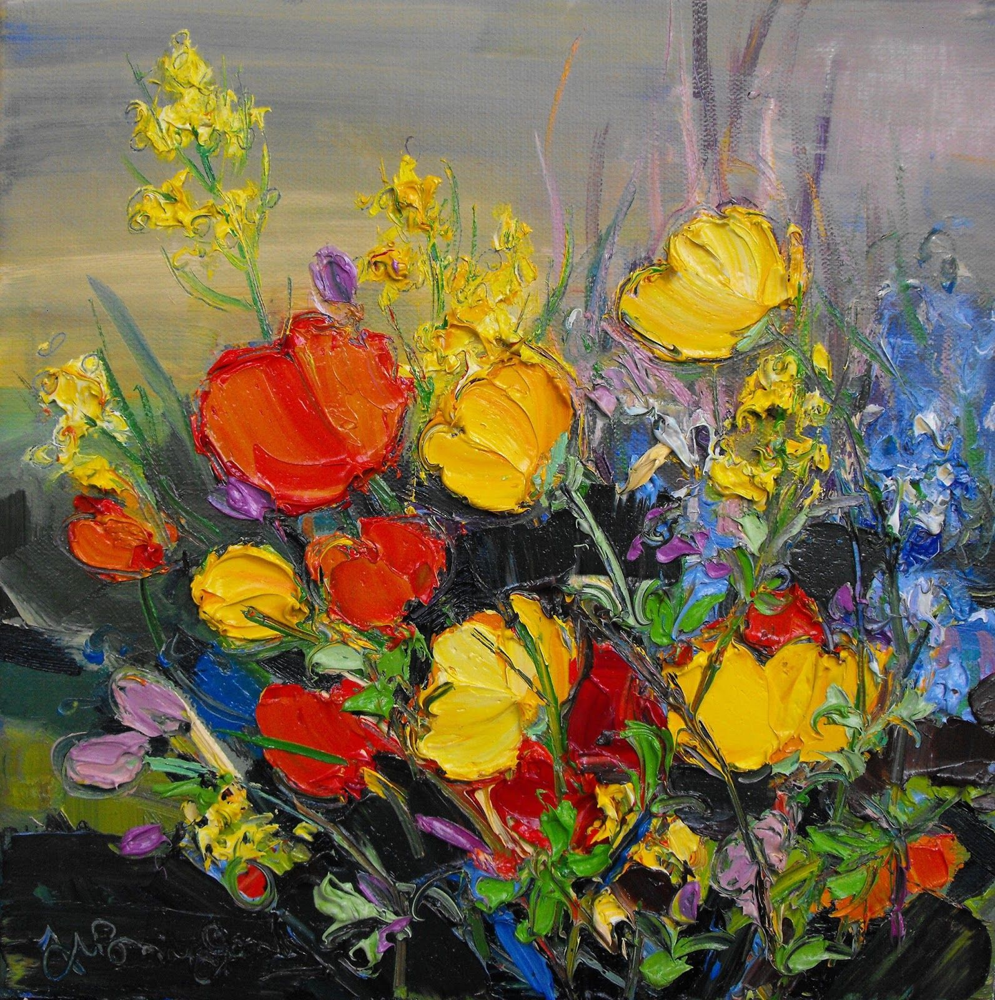
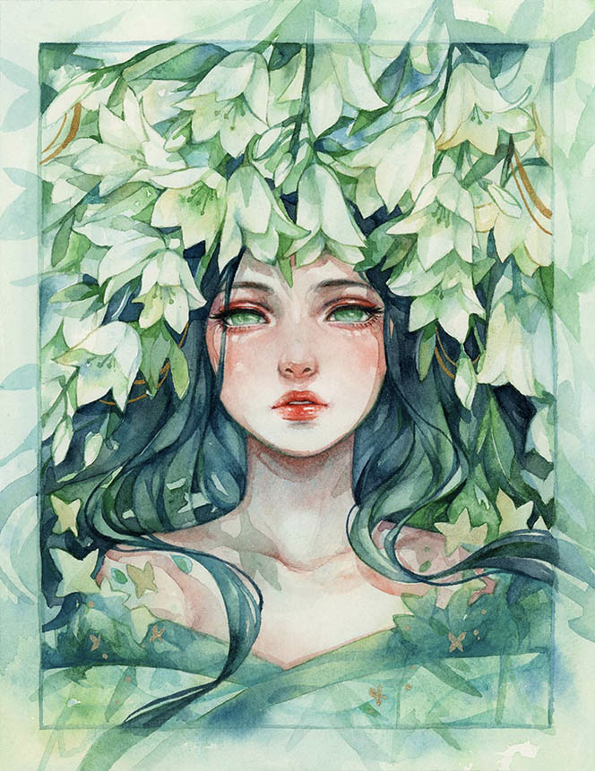
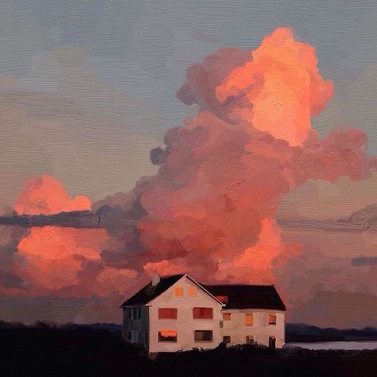
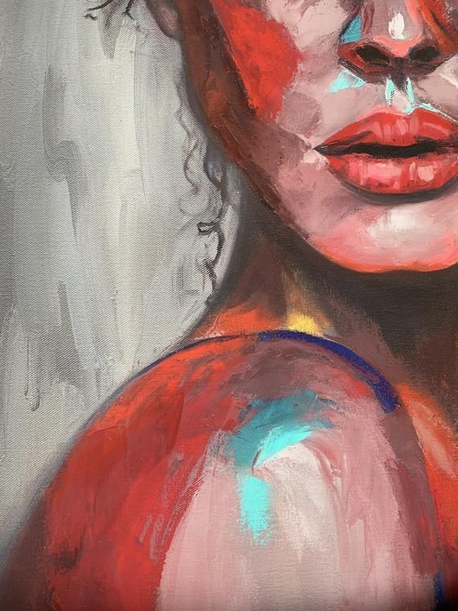
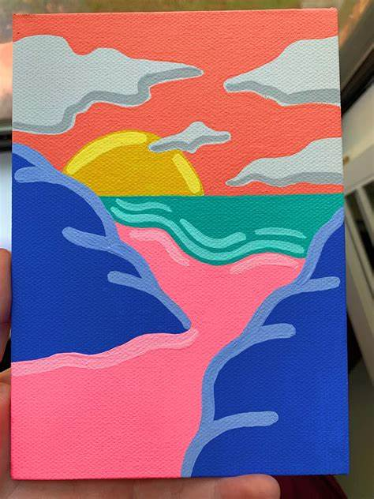
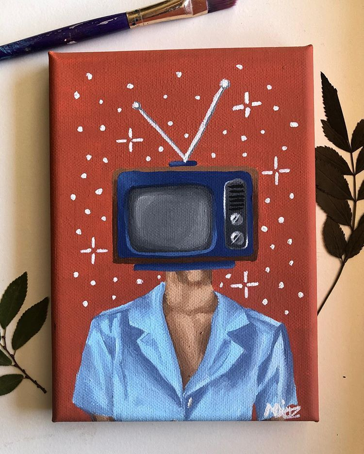
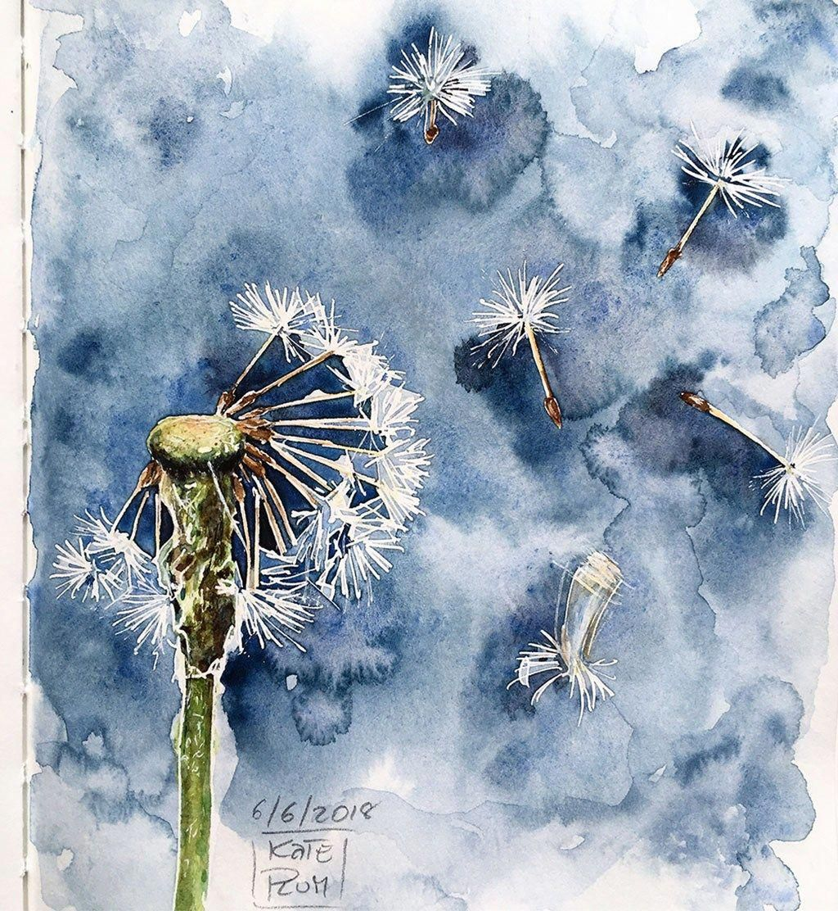
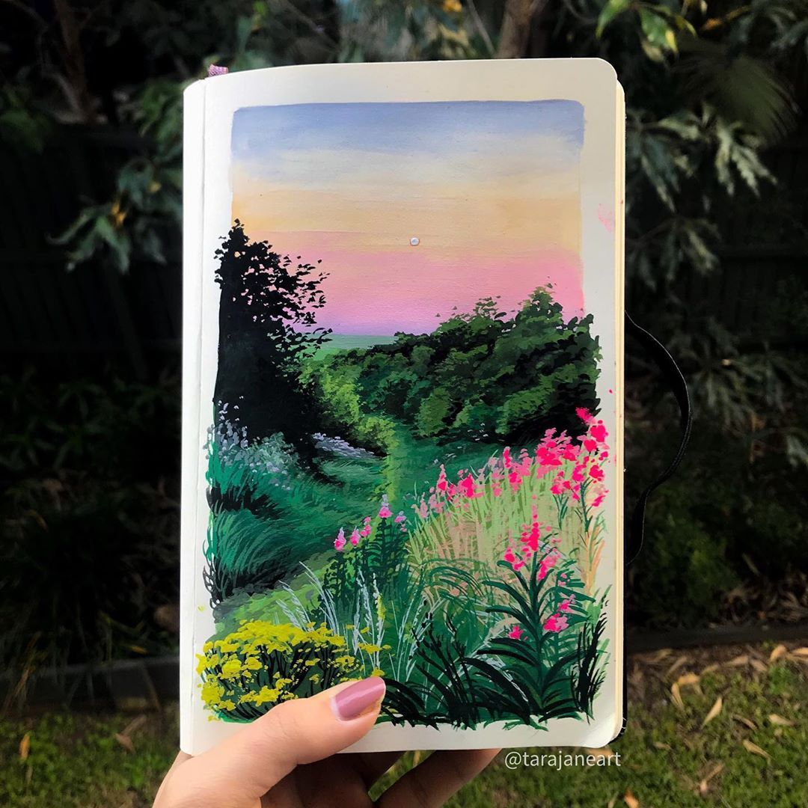
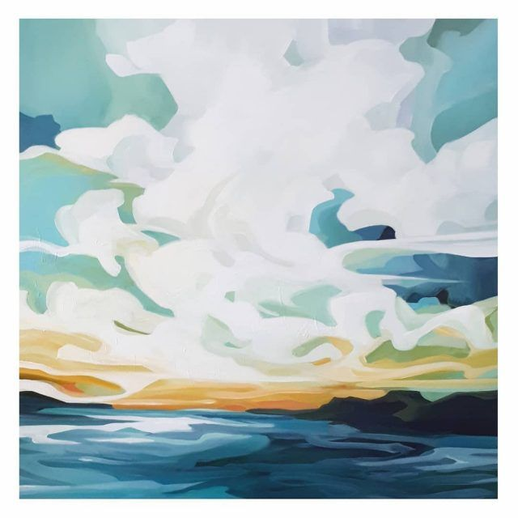
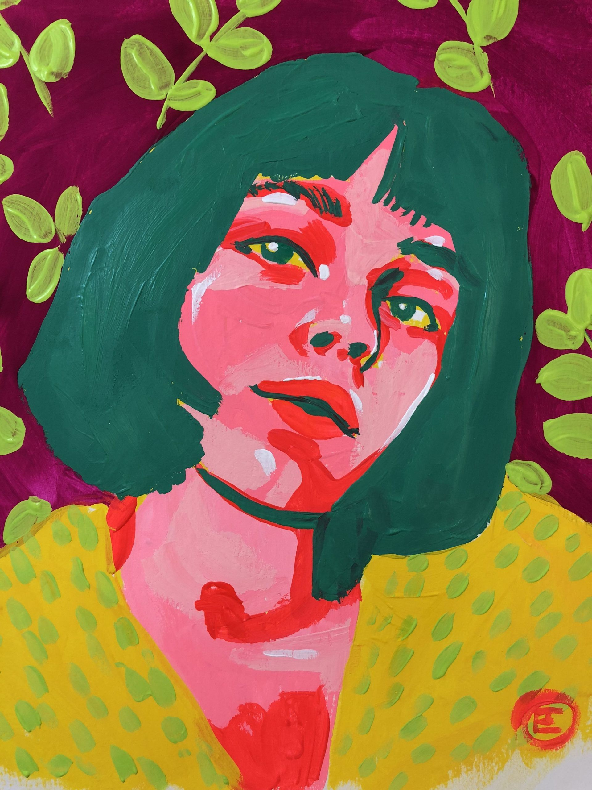

September 2, 2023
Different types of art
| Graphic arts | Abstract arts | Cubism arts | Expressionism arts | Realism arts |
Art is a diverse range of human activity, and resulting product, that involves creative or imaginative talent expressive of technical proficiency, beauty, emotional power, or conceptual ideas.
The history of art focuses on objects made by humans for any number of spiritual, narrative, philosophical, symbolic, conceptual, documentary, decorative, and even functional and other purposes, but with a primary emphasis on its aesthetic visual form. Visual art can be classified in diverse ways, such as separating fine arts from applied arts; inclusively focusing on human creativity; or focusing on different media such as architecture, sculpture, painting, film, photography, and graphic arts. In recent years, technological advances have led to video art, computer art, performance art, animation, television, and videogames.
1.Portrait Arts, such as a painting, photograph, sculpture, or other artistic representation of a person 2.Landscape Arts, sush as the depiction of natural scenery such as mountains, valleys, trees, rivers, and forests 3.Visual Arts, such as painting, sculpture, photography, and architecture. 4.Literary Arts, such as literature, poetry, and comics. 5.Performing Arts, such as music, theater, dance, and cinema. 5.Multidisciplinary Arts, such as installation, performance, and conceptual art, that combine several academic principles in new and unusual ways. 5.Applied Arts, such as fashion, graphic design, and industrial design, that use art to create functional products or services.
|  |  |  |
Acrylic painters can modify the appearance, hardness, flexibility, texture, and other characteristics of the paint surface by using acrylic mediums or simply by adding water. Watercolor and oil painters also use various mediums, but the range of acrylic mediums is much greater. Acrylics have the ability to bond to many different surfaces, and mediums can be used to modify their binding characteristics. Acrylics can be used on paper, canvas, and a range of other materials; however, their use on engineered woods such as medium-density fiberboard can be problematic because of the porous nature of those surfaces. In these cases, it is recommended that the surface first be sealed with an appropriate sealer. The process of sealing acrylic painting is called varnishing. Artists use removable varnishes over isolation coat to protect paintings from dust, UV, scratches, etc. This process is similar to varnishing an oil painting. Acrylic artists' paints may be thinned with water or acrylic medium and used as washes in the manner of watercolor paints, but unlike watercolor the washes are not rehydratable once dry. For this reason, acrylics do not lend themselves to the color lifting techniques of gum arabic-based watercolor paints. Instead, the paint is applied in layers, sometimes diluting with water or acrylic medium to allow layers underneath to partially show through. Using an acrylic medium gives the paint more of a rich and glossy appearance, whereas using water makes the paint look more like watercolor and have a matte finish.
|  |  |  |
Watercolor paint consists of four principal ingredients: a pigment; gum arabic as a binder to hold the pigment in suspension; additives like glycerin, ox gall, honey, and preservatives to alter the viscosity, hiding, durability or color of the pigment and vehicle mixture; and, evaporating water, as a solvent used to thin or dilute the paint for application.Watercolor painting is extremely old, dating perhaps to the cave paintings of paleolithic Europe, and has been used for manuscript illustration since at least Egyptian times, with particular prominence in the European Middle Ages. However, its continuous history as an art medium begins with the Renaissance. The German Northern Renaissance artist Albrecht Dürer (1471–1528), who painted several fine botanical, wildlife, and landscape watercolors, is generally considered among the earliest examples of watercolo. An important school of watercolor painting in Germany was led by Hans Bol (1534–1593) as part of the Dürer Renaissance.
|
|
 |
|
Gouache (/ɡuˈɑːʃ, ɡwɑːʃ/; French: [ɡwaʃ]), body color, or opaque watercolor is a water-medium paint consisting of natural pigment, water, a binding agent (usually gum arabic or dextrin), and sometimes additional inert material. Gouache is designed to be opaque. Gouache has a long history, having been used for at least twelve centuries. It is used most consistently by commercial artists for posters, illustrations, comics, and other design work. Gouache is similar to watercolor in that it can be rewetted and dried to a matte finish, and the paint can become infused into its paper support. It is similar to acrylic or oil paints in that it is normally used in an opaque painting style and it can form a superficial layer. Many manufacturers of watercolor paints also produce gouache, and the two can easily be used together.
|  |  |  |